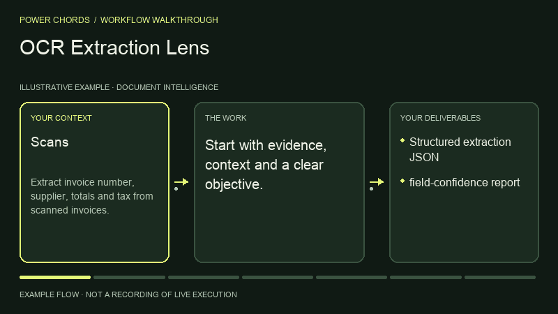

Document Intelligence · BY POWER CHORDS
OCR Extraction Lens
Extract structured data from scans.
OCR and structured extraction with a defined path from your context to a result you can review.
- Published by
- Power Chords
- Delivery today
- Codex workspace
Run privately in the Power Chords workspace using your existing Codex sign-in and installed processing tools. Review actual results and execution receipts. Portable instructions also work with other equipped agents; external actions require approval. - Bring it to
- Claude Code · Codex · Cursor · Gemini CLI · other agents via Markdown
- Result
- Structured extraction JSON
SEE THE PROCESS
From context to structured extraction json.
A capability-specific illustrated walkthrough. Watch the inputs become expected deliverables through a clear sequence of operating steps.

THE WORK, DEFINED
What you bring. What you get.
Bring these inputs
- Scans
- image files
- expected fields
- sample schema
Expected deliverables
- Structured extraction JSON
- field-confidence report
WORKFLOW DIAGRAM
How Lens works.
Follow the numbered sequence. If evidence or access is missing, resolve it before advancing. Review the result before taking an external action.
- INPUT
Scans · image files · expected fields · sample schema
- STEP 01
Check image quality and language support
- STEP 02
Use available OCR tools only with permission
- STEP 03
Extract target fields and coordinates when supported
- STEP 04
Validate formats and low-confidence values
- STEP 05
Route uncertain fields to manual review
- REVIEW
Do not silently fabricate fields that OCR missed
- OUTPUT
Structured extraction JSON · field-confidence report
Approval gate → Review the deliverables. If changes are needed, return to the relevant step. Publish, send, deploy or change external systems only after explicit approval.
TRY IT WITH YOUR CONTEXT
One prompt. Your agent.
Replace the example with your own task and supply the inputs above. Your agent needs the Power Chords instructions and any tools required to perform the work.
Use Power Chords OCR Extraction Lens. Extract invoice number, supplier, totals and tax from scanned invoices. Return Structured extraction JSON, field-confidence report. Show supporting evidence, assumptions, validation and next actions. Ask for my approval before any external write or publication.
FINISH WITH CONFIDENCE
What a good result needs.
- All expected deliverables are present and relevant to your objective.
- Claims trace to your evidence; assumptions and missing inputs are clear.
- Do not silently fabricate fields that OCR missed.
- Tool-dependent results are backed by actual execution, not simulated output.